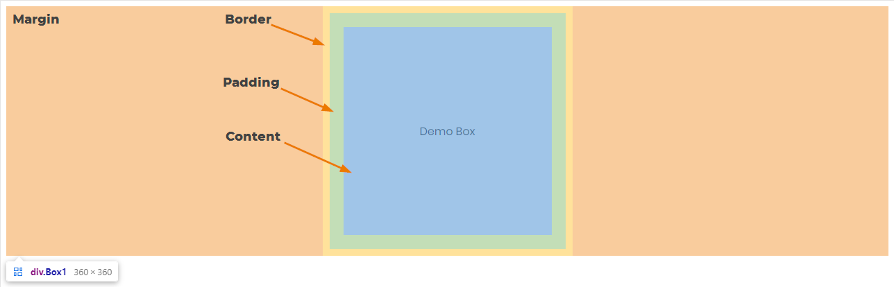
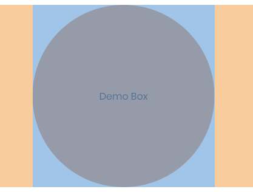
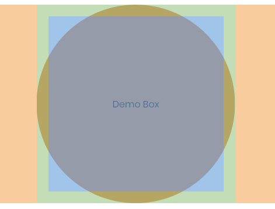
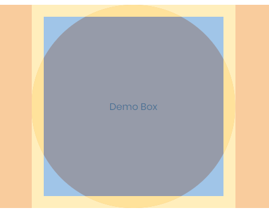
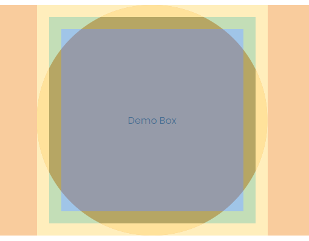
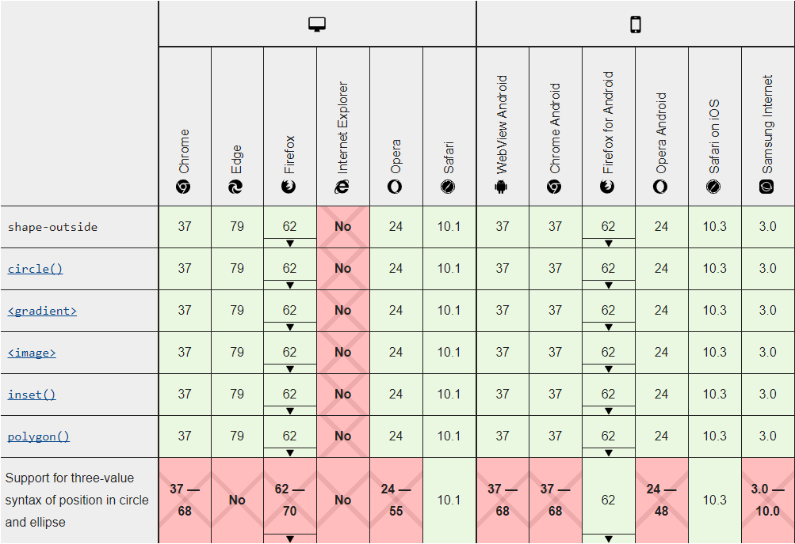
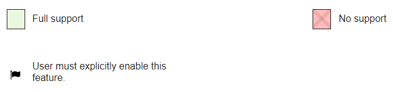

Какво представляват и за какво се използват (въведение)
CSS Shapes се използват за обвиване на съдържание около дефинирани от програмиста линия.
Линиите се дефинират с функции като circle(), ellipse(), inset() или polygon() и се позиционират във виртуална кутия, която се нарича Reference Box.
За тази кутия ще има подробно описание след малко.
CSS Shapes е стандардт, който позволява за създаването на форми, които както беше споменато преди
позволява съдържанието на уеб страници (най-често текст) да следват външните контури.
Подобна техника се използва при създаването на писания, където има много текст.
Преди да се въведат CSS Shapes, беше почти невъзможно да се създаде подобно оформление. Повечето дизайни са били съставени прави линии, редове колони.p>
Малко повече за Reference Box
Reference box дефинира координатната система на формите.
Така тази кутия въздейства върху това как дадена форма ще бъде нарисувана и позиционирана.
Има 4 различни вида: margin-box, padding-box, border-box и content-box. Всяка от тях възпроизвежда леко различни резултати. По подразбиране се използва
margin-box. На фиг(/placeholder number/) долу е показано как изглеждат тези кутии.

Фигура /placeholder number/. Демонстрация на Reference Box
Как тези кутии влияят върху формите
След като имаме добра представа за това какво е Reference Box,
може да се види как тя влияе върху формите, които ползваме. В следващите примери може да видим какви резултати
различните кутии дават в сравнение с обикновената форма
(обикновена в този случай се подразбира като кутия, която използва margin-box но без допълнителен margin)
За примерите с формите, ще се използва същата кутия от обяснението на Reference Box. Тук "Demo Box" има размери 300х300 px.
Този размер се отнася към "content box". Това означава, че при "margin: 0 auto" размерът на кръга е 300х300 px
Детайлите са как се създава формата, ще бъдат покрити в следващите секции.

Фигура /placeholder number/. Кръг, само с "margin: 0 auto"

Фигура /placeholder number/. Кръг, с "margin: 0 auto, padding 20px"

Фигура /placeholder number/. Кръг, с "margin: 0 auto, border 20px"

Фигура /placeholder number/. Кръг, с "margin: 0 auto, border 20px"
Следващата фигура, показва какво се получава ако цветът на border е различна от background-color.
< TODO >: Документация за основните форми, какви параметри приемат. Например функциите:
circle()
ellipse()
inset()
polygon()
< TODO >: Документация за това как се създават форми, като тези показани в предходните примерите.
Примери с код
< TODO >: Текст около форми (без снимка)
< TODO >: Текст, под ъгъл и с градиент под същия ъгъл.
< TODO >: Добавяне на пример със снимка, и форма, която да кара тексът да минава по контурите на снимката.
< TODO >: Добавяне на пример с полигони.
Интерактивно демо
< TODO >: Ще има някакви sliders, които да позволяват за промяна на формата
на някаква формичка.
< TODO >: Мисля да добавя нещо което да показва градиент, който отново някак да може
да се променя.
< TODO >: Ще има формичка с текст, който се увива около нея. Отново мисля да може да се
променя.
< TODO >: Интерактивна версия на демото за reference Box
Къде може да се използват
Таблица с информация за различните browsers


Фигура /placeholder number/. Информация за поддръжка.
Други интересни неща (tips & tricks)
< TODO >: Да се намерят някакви по-интересни и нетипични приложения.
< TODO >: Да се покаже как може да се правят полигони с онлайн инструмент Clippy.
< TODO >: Да се намерят tips & tricks свързани с темата.